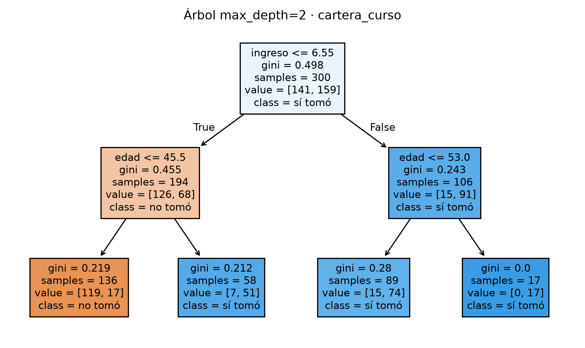

# =====================================================================
# IMPORTS del laboratorio. Cada uno tiene un rol:
# numpy -> aritmética (promedios, puntos medios entre valores)
# pandas -> leer y manipular la cartera de clientes
# matplotlib -> plot_tree y figuras
# sklearn.tree -> DecisionTreeClassifier (el modelo), plot_tree (dibujo),
# export_text (reglas como texto)
# =====================================================================
import numpy as np
import pandas as pd
import matplotlib.pyplot as plt
from IPython.display import Markdown, display
from sklearn.tree import DecisionTreeClassifier, plot_tree, export_text
from sklearn.ensemble import RandomForestClassifier
from sklearn.model_selection import train_test_split
from sklearn.metrics import (accuracy_score, precision_score, recall_score,
f1_score, confusion_matrix)
def texto(md):
"""Imprime Markdown enriquecido (títulos, negritas, fórmulas) en el output."""
display(Markdown(md))
# estilo global de las figuras: PUEDES TOCARLO (solo estética)
plt.rcParams.update({"figure.dpi": 140, "font.size": 9,
"axes.spines.top": False, "axes.spines.right": False})02 · El árbol de decisión por dentro: argumentos, ejecución y métricas
Machine Learning · UTB 2026-II · Reproducción comentada del laboratorio sobre cartera_curso.csv
1 Para qué sirve este documento
Reproduce el laboratorio “El árbol de decisión por dentro” con DecisionTreeClassifier de scikit-learn sobre datos/cartera_curso.csv (400 clientes del banco: edad, ingreso y si tomaron el crédito).
Los números de este documento son los mismos del laboratorio: Gini de la raíz 0.4982, primer corte ingreso <= 6.55, exactitud 0.900 en prueba, matriz de confusión 37/6/4/53. Si el parcial pide reproducir algún paso, aquí está cada uno con su explicación.
Los puntos donde puedes cambiar algo están marcados con CAMBIA AQUÍ en los comentarios del código.
2 Las tres fases
| Fase | Código | Qué pasa dentro del árbol |
|---|---|---|
| 1. Construir | DecisionTreeClassifier(max_depth=2, ...) |
Se fija qué tanto puede crecer el árbol. |
| 2. Entrenar | .fit(X_train, y_train) |
En cada nodo prueba todos los cortes posibles y se queda con el que más reduce el Gini. La estructura queda en tree_. |
| 3. Usar | .predict(X) |
Cada cliente baja por las preguntas hasta una hoja y recibe la clase mayoritaria de esa hoja. |
3 Setup: librerías y datos
# =====================================================================
# LOS DATOS: cartera_curso.csv (400 clientes del banco).
# OJO con los argumentos de lectura: el archivo usa PUNTO Y COMA como
# separador y COMA decimal (formato europeo), por eso:
# sep=";" -> columnas separadas por ';'
# decimal="," -> los números traen coma decimal ('7,6' -> 7.6)
# CAMBIA AQUÍ la ruta si mueves el archivo o trabajas en RStudio Cloud.
# =====================================================================
datos = pd.read_csv("datos/cartera_curso.csv", sep=";", decimal=",")
datos.head() # mira las columnas: id_cliente, edad, ingreso, tomo_credito| id_cliente | edad | ingreso | tomo_credito | |
|---|---|---|---|---|
| 0 | C125 | 54 | 7.6 | 1 |
| 1 | C037 | 26 | 6.5 | 0 |
| 2 | C298 | 20 | 2.8 | 0 |
| 3 | C339 | 45 | 7.3 | 1 |
| 4 | C050 | 34 | 7.6 | 1 |
# =====================================================================
# VARIABLES y OBJETIVO (igual que en el laboratorio):
# V = ['edad', 'ingreso'] -> las variables predictoras (las X)
# OBJ = 'tomo_credito' -> la etiqueta: 1 = sí tomó, 0 = no tomó
# CAMBIA AQUÍ si el ejercicio usa otras columnas.
# =====================================================================
V, OBJ = ["edad", "ingreso"], "tomo_credito"
# Se ordena por id_cliente y se parte 75/25 SIN aleatorizar:
# los primeros 300 clientes entrenan, los últimos 100 prueban.
d = datos.sort_values("id_cliente").reset_index(drop=True)
corte = int(np.floor(0.75 * len(d))) # 0.75 * 400 = 300
X_train, y_train = d.loc[:corte-1, V].values, d.loc[:corte-1, OBJ].values
X_test, y_test = d.loc[corte:, V].values, d.loc[corte:, OBJ].values
print("Entrenamiento:", X_train.shape, "| Prueba:", X_test.shape)
# Si el ejercicio pidiera un reparto ALEATORIO, la línea estándar es:
# X_tr, X_te, y_tr, y_te = train_test_split(datos[V].values, datos[OBJ].values,
# test_size=0.25, random_state=0)Entrenamiento: (300, 2) | Prueba: (100, 2)4 Fase 1 · Los argumentos del árbol
| valor de fábrica | |
|---|---|
| ccp_alpha | 0.0 |
| class_weight | None |
| criterion | gini |
| max_depth | None |
| max_features | None |
| max_leaf_nodes | None |
| min_impurity_decrease | 0.0 |
| min_samples_leaf | 1 |
| min_samples_split | 2 |
| min_weight_fraction_leaf | 0.0 |
| monotonic_cst | None |
| random_state | None |
| splitter | best |
| argumento | de fábrica | qué controla | cuándo tocarlo |
|---|---|---|---|
criterion |
gini |
cómo mide la impureza | gini casi siempre; entropy da árboles muy parecidos |
splitter |
best |
cómo elige el umbral de cada corte | best prueba todos; random sortea (útil en conjuntos de árboles) |
max_depth |
None |
cuántas preguntas encadenadas | subirlo baja el sobreajuste; None = crece hasta hojas puras (memoriza) |
min_samples_split |
2 |
mínimo de clientes para partir un nodo | subirlo evita cortes sobre grupos diminutos |
min_samples_leaf |
1 |
mínimo de clientes en cada hoja | subirlo suaviza la frontera |
max_leaf_nodes |
None |
número máximo de hojas | otra forma de limitar el tamaño del árbol |
min_impurity_decrease |
0.0 |
ganancia mínima para aceptar un corte | subirlo evita cortes que casi no mejoran |
ccp_alpha |
0.0 |
poda por costo-complejidad | mayor que 0 = poda las ramas que no pagan su costo |
class_weight |
None |
peso de cada clase | balanced con clases muy desbalanceadas |
random_state |
None |
semilla | fijarla: con empates entre cortes, decide cuál se elige |
# =====================================================================
# El árbol del laboratorio, con TODOS los argumentos por su nombre
# (así es como se debe responder 'del lápiz a Python').
# CAMBIA AQUÍ cualquier argumento para ver su efecto; después del .fit,
# las secciones siguientes se recalculan con el árbol nuevo.
# =====================================================================
arbol = DecisionTreeClassifier(
criterion="gini", # impureza de Gini (la de la actividad a mano)
splitter="best", # probar TODOS los cortes y quedarse con el mejor
max_depth=2, # a lo sumo dos preguntas encadenadas
min_samples_leaf=5, # ninguna hoja con menos de 5 clientes
random_state=0) # reproducible (decide los empates)
arbol # así se ve el estimador con sus argumentosDecisionTreeClassifier(max_depth=2, min_samples_leaf=5, random_state=0)In a Jupyter environment, please rerun this cell to show the HTML representation or trust the notebook.
On GitHub, the HTML representation is unable to render, please try loading this page with nbviewer.org.
Parameters
Árbol contra bosque, en los argumentos. El árbol no tiene n_estimators ni bootstrap: esos son del bosque, porque hablan de cuántos árboles hay y de cómo se muestrea para cada uno. Y en el árbol max_features viene en None (mira todas las variables), mientras en el bosque viene en 'sqrt' (cada corte mira solo algunas, para que los árboles salgan distintos).
5 Fase 2 · Entrenar: cómo elige la primera pregunta
5.1 La matemática
La impureza de un grupo con proporción \(p\) de la clase 1 es \(G = 2p(1-p)\). El árbol prueba cada variable y cada umbral posible, y se queda con el corte que minimiza el Gini ponderado:
\[G_{\text{corte}} = \frac{n_{\text{izq}}}{n} G_{\text{izq}} + \frac{n_{\text{der}}}{n} G_{\text{der}} \qquad \text{ganancia} = G_{\text{raíz}} - G_{\text{corte}}\]
5.2 A mano: la búsqueda exhaustiva
# =====================================================================
# BÚSQUEDA EXHAUSTIVA replicando lo que hace .fit() en el nodo raíz:
# probar CADA umbral posible de CADA variable y quedarse con el corte
# de menor Gini ponderado.
# =====================================================================
def gini(y):
"""Gini de un nodo: 2*p*(1-p) con p = proporción de unos."""
if len(y) == 0:
return 0.0
p = y.mean()
return 2 * p * (1 - p)
g_raiz = gini(y_train) # impureza de la raíz (300 clientes)
print(f"Gini de la raíz: {g_raiz:.4f}")
mejor = {"gp": np.inf} # arrancamos con 'infinito' para que
# el primer corte válido siempre gane
for j, nombre in enumerate(V): # V = ['edad', 'ingreso']
valores = np.unique(X_train[:, j]) # valores ordenados sin repetir
# los umbrales candidatos son los PUNTOS MEDIOS entre valores
# consecutivos: scikit-learn corta entre dos observaciones, y cualquier
# número entre ellas separa igual; él usa el punto medio.
for u in (valores[:-1] + valores[1:]) / 2:
izq = X_train[:, j] <= u # máscara: los que caen a la izquierda
if izq.sum() < 5 or (~izq).sum() < 5: # respeta min_samples_leaf=5
continue # este corte no es válido
# Gini ponderado del corte (la fórmula de la actividad):
gp = (izq.sum() * gini(y_train[izq]) +
(~izq).sum() * gini(y_train[~izq])) / len(y_train)
if gp < mejor["gp"]: # ¿es el mejor visto hasta ahora?
mejor = {"variable": nombre, "umbral": u, "gp": gp}
print(f"Mejor corte a mano: {mejor['variable']} <= {mejor['umbral']:.2f} "
f"(Gini ponderado {mejor['gp']:.4f}, "
f"ganancia {g_raiz - mejor['gp']:.4f})")Gini de la raíz: 0.4982
Mejor corte a mano: ingreso <= 6.55 (Gini ponderado 0.3803, ganancia 0.1179)# =====================================================================
# Ahora el árbol de verdad: .fit() hace esa misma búsqueda en la raíz,
# y luego la repite en cada nodo nuevo hasta que algo lo detiene
# (aquí lo detiene max_depth=2).
# =====================================================================
arbol.fit(X_train, y_train)
t = arbol.tree_ # AQUÍ queda guardada toda la estructura del árbol
# ¿Coincidió .fit() con nuestra búsqueda a mano?
print(f".fit() eligió: {V[t.feature[0]]} <= {t.threshold[0]:.2f}")
print("(debería ser la misma pregunta que la búsqueda exhaustiva)").fit() eligió: ingreso <= 6.55
(debería ser la misma pregunta que la búsqueda exhaustiva)Por qué el umbral es un punto medio (por ejemplo 6.55 y no 6.5 o 6.6): el árbol corta entre dos valores observados consecutivos, así que cualquier número entre ellos separa exactamente igual; scikit-learn usa el punto medio.
5.3 Qué guarda el árbol: la estructura tree_
# =====================================================================
# tree_ guarda UNA TABLA INTERNA con una fila por nodo. Aquí la
# reconstruimos legible. Índices clave:
# t.feature[i] : por qué variable pregunta el nodo i (-1 si hoja)
# t.threshold[i] : el umbral de la pregunta
# t.children_left[i] : índice del hijo que SÍ cumple
# t.children_right[i] : índice del hijo que NO cumple (-1 = es hoja)
# t.n_node_samples[i] : cuántos clientes de entrenamiento caen ahí
# t.value[i] : cuántos hay de cada clase en ese nodo
# t.impurity[i] : el Gini del nodo
# =====================================================================
nodos = []
for i in range(t.node_count):
es_hoja = (t.children_left[i] == -1) # -1 significa "sin hijos"
if es_hoja:
pregunta = "—"
else:
pregunta = f"{V[t.feature[i]]} <= {t.threshold[i]:.2f}"
nodos.append({
"nodo": i,
"tipo": "hoja" if es_hoja else "pregunta",
"pregunta": pregunta,
"clientes": int(t.n_node_samples[i]),
"prop_clase_1": t.value[i][0][1] / t.value[i][0].sum(), # proporción de unos
"Gini": t.impurity[i]})
pd.DataFrame(nodos).round(3)| nodo | tipo | pregunta | clientes | prop_clase_1 | Gini | |
|---|---|---|---|---|---|---|
| 0 | 0 | pregunta | ingreso <= 6.55 | 300 | 0.530 | 0.498 |
| 1 | 1 | pregunta | edad <= 45.50 | 194 | 0.351 | 0.455 |
| 2 | 2 | hoja | — | 136 | 0.125 | 0.219 |
| 3 | 3 | hoja | — | 58 | 0.879 | 0.212 |
| 4 | 4 | pregunta | edad <= 53.00 | 106 | 0.858 | 0.243 |
| 5 | 5 | hoja | — | 89 | 0.831 | 0.280 |
| 6 | 6 | hoja | — | 17 | 1.000 | 0.000 |
# Los atributos útiles DESPUÉS del .fit(): cada uno responde algo del árbol.
print("Profundidad alcanzada:", arbol.get_depth()) # 2: preguntas encadenadas
print("Número de hojas :", arbol.get_n_leaves()) # 4: uno por región final
print("Importancia por variable:", # reducción total de Gini
dict(zip(V, arbol.feature_importances_.round(3)))) # que logró cada variable
print("Orden de las clases :", arbol.classes_) # [0, 1]: las columnas de
# predict_probaProfundidad alcanzada: 2
Número de hojas : 4
Importancia por variable: {'edad': np.float64(0.571), 'ingreso': np.float64(0.429)}
Orden de las clases : [0 1]6 Leer el árbol: dibujo y reglas
# =====================================================================
# EL DIBUJO del árbol entrenado. En cada caja: la pregunta, el Gini,
# cuántos clientes caen y cómo se reparten entre clases. La caja se pinta
# según la clase mayoritaria (filled=True).
# CAMBIA AQUÍ: feature_names, class_names y fontsize para legibilidad.
# =====================================================================
fig, ax = plt.subplots(figsize=(9, 5))
plot_tree(arbol,
feature_names=V, # nombres reales de las columnas
class_names=["no tomó", "sí tomó"], # etiqueta de cada clase
filled=True, # colorear según la clase
fontsize=9, # letra (bájala si no cabe)
ax=ax)
ax.set_title("Árbol max_depth=2 · cartera_curso");
# =====================================================================
# Las REGLAS como texto: lo que se pega en un informe o se le explica
# a un comité. export_text es la manera estándar.
# =====================================================================
reglas = export_text(arbol, feature_names=V, decimals=2)
print(reglas)|--- ingreso <= 6.55
| |--- edad <= 45.50
| | |--- class: 0
| |--- edad > 45.50
| | |--- class: 1
|--- ingreso > 6.55
| |--- edad <= 53.00
| | |--- class: 1
| |--- edad > 53.00
| | |--- class: 1
# Las mismas reglas, traducidas al lenguaje del negocio (comité de crédito):
# se lee de arriba hacia abajo: cada bloque es una hoja del árbol.
print("Reglas en palabras del comité de crédito:")
print("1) Si el ingreso <= 6.55 millones Y la edad <= 45 años ->",
"clase 0: lo más probable es que NO tome el crédito (126 no / 68 sí).")
print("2) Si el ingreso <= 6.55 millones Y la edad > 45 años ->",
"clase 1: lo más probable es que SÍ lo tome (7 no / 51 sí).")
print("3) Si el ingreso > 6.55 millones y la edad <= 53 años ->",
"clase 1: lo más probable es que SÍ lo tome (15 no / 74 sí).")
print("4) Si el ingreso > 6.55 millones y la edad > 53 años ->",
"clase 1: SÍ lo toma (0 no / 17 sí): hoja pura.")Reglas en palabras del comité de crédito:
1) Si el ingreso <= 6.55 millones Y la edad <= 45 años -> clase 0: lo más probable es que NO tome el crédito (126 no / 68 sí).
2) Si el ingreso <= 6.55 millones Y la edad > 45 años -> clase 1: lo más probable es que SÍ lo tome (7 no / 51 sí).
3) Si el ingreso > 6.55 millones y la edad <= 53 años -> clase 1: lo más probable es que SÍ lo tome (15 no / 74 sí).
4) Si el ingreso > 6.55 millones y la edad > 53 años -> clase 1: SÍ lo toma (0 no / 17 sí): hoja pura.Esta es la ventaja que el bosque no tiene: un árbol se puede leer entero como un puñado de reglas «si… entonces». Un bosque de 200 árboles no: gana precisión, pero pierde esta explicación.
7 Fase 3 · Usar: cómo predice
La probabilidad que da un árbol es la proporción de la clase 1 en la hoja donde cae el cliente.
# =====================================================================
# .apply() dice EN QUÉ HOJA cae cada cliente de prueba; con t.value
# podemos calcular la probabilidad A MANO y comprobar que
# predict_proba devuelve exactamente eso.
# =====================================================================
hojas = arbol.apply(X_test) # hoja de cada cliente de prueba
p_mano = t.value[hojas, 0, 1] / t.value[hojas, 0].sum(axis=1) # proporción de 1 en su hoja
p_sklearn = arbol.predict_proba(X_test)[:, 1] # probabilidad de clase 1 según sklearn
print("¿Coinciden la probabilidad a mano y predict_proba?:",
np.allclose(p_mano, p_sklearn))
# El primer cliente de prueba, paso a paso:
i = 0
print(f"Cliente de prueba {i}: edad {X_test[i,0]}, ingreso {X_test[i,1]:.1f}")
print(f"caé en la hoja {hojas[i]}, donde la proporción de clientes que "
f"tomaron el crédito es {p_mano[i]:.4f}")
print("Esa es su probabilidad; predict_proba devuelve exactamente eso.")¿Coinciden la probabilidad a mano y predict_proba?: True
Cliente de prueba 0: edad 48.0, ingreso 7.2
caé en la hoja 5, donde la proporción de clientes que tomaron el crédito es 0.8315
Esa es su probabilidad; predict_proba devuelve exactamente eso.Consecuencia: un árbol de 4 hojas solo puede dar 4 probabilidades distintas. Todos los clientes de una misma hoja reciben la misma.
8 El efecto de cada argumento
# =====================================================================
# EXPERIMENTO CONTROLADO: mover UN argumento a la vez y dejar los demás
# de fábrica. Lo que importa es la BRECHA entrenamiento-prueba:
# brecha grande -> memorizó (sobreajuste)
# brecha pequeña -> generaliza mejor
# CAMBIA AQUÍ las listas de valores para probar otras configuraciones.
# =====================================================================
def probar(**cambio):
"""Entrena un árbol con los argumentos extra 'cambio' y devuelve
(número de hojas, exactitud en entrenamiento, exactitud en prueba)."""
m = DecisionTreeClassifier(random_state=0, **cambio).fit(X_train, y_train)
return (m.get_n_leaves(), m.score(X_train, y_train), m.score(X_test, y_test))
experimentos = []
for nombre, valores in [("max_depth", [1, 2, None]), # None = sin límite
("min_samples_leaf", [1, 5, 30]), # mínimo por hoja
("ccp_alpha", [0.0, 0.005, 0.02])]: # poda posterior
for v in valores:
hojas_n, tr, te = probar(**{nombre: v}) # ** desempaqueta {nombre: v}
experimentos.append({"argumento": nombre, "valor": str(v),
"hojas": hojas_n, "entrenamiento": tr,
"prueba": te, "brecha": tr - te})
pd.DataFrame(experimentos).round(3)| argumento | valor | hojas | entrenamiento | prueba | brecha | |
|---|---|---|---|---|---|---|
| 0 | max_depth | 1 | 2 | 0.723 | 0.70 | 0.023 |
| 1 | max_depth | 2 | 4 | 0.870 | 0.90 | -0.030 |
| 2 | max_depth | None | 75 | 0.980 | 0.77 | 0.210 |
| 3 | min_samples_leaf | 1 | 75 | 0.980 | 0.77 | 0.210 |
| 4 | min_samples_leaf | 5 | 33 | 0.877 | 0.87 | 0.007 |
| 5 | min_samples_leaf | 30 | 7 | 0.870 | 0.90 | -0.030 |
| 6 | ccp_alpha | 0.0 | 75 | 0.980 | 0.77 | 0.210 |
| 7 | ccp_alpha | 0.005 | 4 | 0.873 | 0.89 | -0.017 |
| 8 | ccp_alpha | 0.02 | 3 | 0.870 | 0.90 | -0.030 |
Cómo leer la tabla:
- Con los valores de fábrica (
max_depth=None) el árbol crece hasta 75 hojas, llega a 0.980 en entrenamiento y la brecha es +0.210: memorizó. Conmax_depth=2bastan 4 hojas y la prueba sube a 0.900. ccp_alphahace lo mismo por otro camino: poda después de crecer, cortando las ramas que no pagan su costo. Conccp_alpha=0.02el árbol queda en 3 hojas.- Regla práctica: si la brecha (entrenamiento − prueba) es grande, el árbol está sobreajustado; sube
min_samples_leaf, bajamax_deptho subeccp_alpha.
9 Las métricas: cómo se llaman bien
# =====================================================================
# TODAS las métricas del árbol en prueba, con los argumentos POR SU NOMBRE
# (así las pide el laboratorio). Convención: positivo = clase 1 = 'sí tomó'.
# =====================================================================
clase = arbol.predict(X_test) # las predicciones 0/1 del árbol
exactitud = accuracy_score(y_true=y_test, y_pred=clase)
precision = precision_score(y_true=y_test, y_pred=clase, pos_label=1, zero_division=0)
recall = recall_score(y_true=y_test, y_pred=clase, pos_label=1)
f1 = f1_score(y_true=y_test, y_pred=clase, pos_label=1)
# La matriz de confusión con labels=[0,1] fija el orden de filas/columnas;
# .ravel() la aplana en el orden VN, FP, FN, VP.
VN, FP, FN, VP = confusion_matrix(y_true=y_test, y_pred=clase,
labels=[0, 1]).ravel()
resumen = pd.DataFrame({
"métrica": ["exactitud", "precisión", "recall", "F1"],
"llamada": ["accuracy_score(y_true, y_pred)",
"precision_score(y_true, y_pred, pos_label=1)",
"recall_score(y_true, y_pred, pos_label=1)",
"f1_score(y_true, y_pred, pos_label=1)"],
"fórmula": ["(VP+VN)/n", "VP/(VP+FP)", "VP/(VP+FN)", "2·P·R/(P+R)"],
"valor": [exactitud, precision, recall, f1]})
resumen.round(3)| métrica | llamada | fórmula | valor | |
|---|---|---|---|---|
| 0 | exactitud | accuracy_score(y_true, y_pred) | (VP+VN)/n | 0.900 |
| 1 | precisión | precision_score(y_true, y_pred, pos_label=1) | VP/(VP+FP) | 0.898 |
| 2 | recall | recall_score(y_true, y_pred, pos_label=1) | VP/(VP+FN) | 0.930 |
| 3 | F1 | f1_score(y_true, y_pred, pos_label=1) | 2·P·R/(P+R) | 0.914 |
# La matriz de confusión como tabla, con totales (como en el laboratorio):
cm = confusion_matrix(y_true=y_test, y_pred=clase, labels=[0, 1])
cm_df = pd.DataFrame(cm, index=["real 0", "real 1"],
columns=["pred. 0", "pred. 1"])
cm_df["total"] = cm_df.sum(axis=1) # total por fila
cm_df.loc["total"] = cm_df.sum() # total por columna + global
cm_df| pred. 0 | pred. 1 | total | |
|---|---|---|---|
| real 0 | 37 | 6 | 43 |
| real 1 | 4 | 53 | 57 |
| total | 41 | 59 | 100 |
10 Árbol contra bosque (anticipo)
# =====================================================================
# El experimento del laboratorio: UN árbol contra UN bosque de 200,
# ambos de fábrica, sobre 20 particiones aleatorias distintas.
# El bosque promedia 200 árboles, cada uno entrenado con una muestra
# distinta (bootstrap), y eso compensa la tendencia de cada árbol a
# memorizar. El precio: ya no se puede leer como reglas.
# (El documento 03 profundiza en el bosque.)
# =====================================================================
filas = []
for s in range(20): # 20 semillas = 20 repartos entrenamiento/prueba
A, B, a, b = train_test_split(datos[V].values, datos[OBJ].values,
test_size=0.25, random_state=s)
filas.append({
"árbol": DecisionTreeClassifier(random_state=0).fit(A, a).score(B, b),
"bosque": RandomForestClassifier(n_estimators=200, random_state=0,
n_jobs=-1).fit(A, a).score(B, b)})
comp = pd.DataFrame(filas)
tabla_comp = pd.DataFrame({
"modelo": ["Árbol de decisión (uno solo)", "Random Forest (200 árboles)"],
"exactitud media": [comp["árbol"].mean(), comp["bosque"].mean()],
"desviación": [comp["árbol"].std(), comp["bosque"].std()],
"se puede leer como reglas": ["sí", "no"]})
tabla_comp.round(3)| modelo | exactitud media | desviación | se puede leer como reglas | |
|---|---|---|---|---|
| 0 | Árbol de decisión (uno solo) | 0.765 | 0.037 | sí |
| 1 | Random Forest (200 árboles) | 0.830 | 0.037 | no |
Cuándo preferir cada uno (respuesta del laboratorio):
- Árbol: cuando necesito explicar la decisión (comité de crédito, regulador, informe) o cuando los datos son pocos.
- Bosque: cuando importa acertar y puedo sacrificar la lectura (scoring automático, producción). Aquí gana: 0.831 contra 0.765.
11 Respuestas del laboratorio (los numerales)
- Con la tabla de nodos (
estructura): los clientes por hoja son 136, 58, 89 y 17; la probabilidad de cada hoja es la proporción de clase 1: 0.125, 0.879, 0.831 y 1.000 respectivamente. min_samples_leaf=5por1: la búsqueda a mano y el.fitsiguen coincidiendo en la primera pregunta (ingreso <= 6.55); cambia lo que ocurre en los niveles siguientes. Para comprobarlo, cambiamin_samples_leaf=5por1en el bloquearbol-basey vuelve a ejecutarbusquedayfit.- Reglas al comité: ver el bloque
reglas-negocio. - ¿Árbol o bosque?: ver la sección anterior.